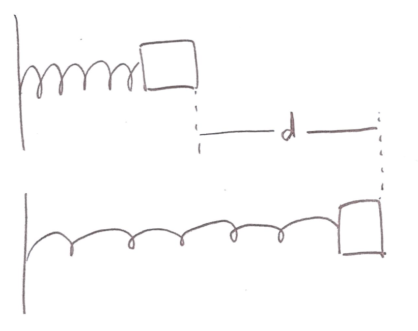
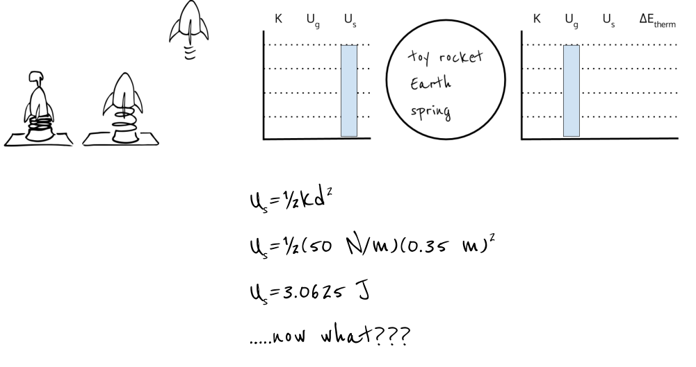

layout: true <div class="my-header"></div> --- class: center, middle .title[Energy] .subtitle[A *Model* for Conservation] .author[👨🏻🏫 Nathan Porter] .institution[🏫 Maple Hill High School] .coauthor[] .institution[] .date[📅 2019-2020] .center[] <!--.footnote[Created with [{Remark.js}](http://remarkjs.com/) using [{Markdown}](https://daringfireball.net/projects/markdown/) + [{MathJax}](https://www.mathjax.org/)]--> --- #The Bungee Jumper + Represent this situation with as well as you can (with as many diagrams as you can) + Predict (using your physics diagrams or equations and your designated variables) the lowest height of the mass after it is released <!-- .center[<iframe src="https://e.ggtimer.com/10%20minutes" width="700px" height="300 px"/>] --> -- ####Share out your findings -- ####Where did you run into issues solving this? --- class:center, middle #####We need a #####new model! -- We will use this to *eventually* solve this problem. --- class:middle, center #####Energy! --- class:center, middle #####How do we use the word 'Energy' in every day language? --- class:center, middle #####How is this different than the use of 'Energy' in a science class? --- class:center, middle #####Remember that Physics is a foreign language that *sounds* like English... --- #Hot Wheels Car: On your whiteboards: - Draw pie charts for where the energy is stored (in what object) at three snapshots: 1. when the launcher is pulled back all the way, but is not released yet 2. when the car is moving, but still touching the launcher 3. when the car is moving and no longer touching the launcher. - If the energy is stored in more than one object, just divide the pie into slices --- #Pull-back car - Draw pie charts for where the energy is stored (in what object) at three snapshots: 1. when the car has been pulled back and is not yet moving 2. then two more when the car is moving and has not yet been stopped --- #How the energy is stored Energy is like money... -- - **Kinetic Energy** - when energy is stored in *motion* - **Spring interaction energy** - energy stored when an object stretches or compresses a spring --- #Nerf Dart Launcher - Draw pie charts for how the energy is stored at three snapshots: 1. when the dart is compressing the spring and isn’t moving yet 2. when the dart has just left the gun (no longer touching spring) 3. when the dart is at the maximum height --- #Pull-back car round 2 - Draw pie charts for how the energy is stored at three snapshots: 1. when the cart has been pulled back but is not moving 2. when the car is moving 3. when the car as stopped --- #Energy Definitions ##Kinetic Energy: - **Symbol**: `\(K\)` -- - **When is the energy stored in this way?** When you have a moving object(s) -- - **Notes**: Depends on mass and velocity --- #Energy Definitions ##Spring Interaction Energy: - **Symbol**: `\(U_s\)` -- - **When is the energy stored in this way?** object stretches or compresses a spring or another elastic material -- - **Notes:** Interaction energy is energy stored in the interaction of two objects. (i.e. Loaded nerf launcher without a dart) --- #Energy Definitions ##Gravitational interaction energy: - **Symbol**: `\(U_g\)` -- - **When is the energy stored in this way?**: `\(\Delta y\)` in a gravitational field -- - **Notes**: Depends on `\(\Delta y\)`, a reference line (`\(y=0\)`), and the weight of the object --- #Energy Definitions ##Internal Energy: - **Symbol**: `\(Q\)` -- - **When is the energy stored in this way?** particles have a faster random motion -- - **Notes**: Often refered to as change in thermal energy, but includes sound vibrations --- class:center, middle #####LOL 🤣😂 Diagrams (Energy Bar Graphs) --- #Energy Definitions ##Work: - **Symbol**: `\(W = \Delta E\)` -- - **When is the energy stored in this way?** External force changes the energy of the system -- - **Notes**: None...yet --- #Tic Tac Bounce: - Drop your tic tac a few times and make some observations about how it bounces. -- - Notice how there is a low bounce followed by a high bounce? -- - Create an LOLOL diagram, graphing the energy of the tic tac at the drop, the top of the first bounce, and then the top of the second bounce --- ##Why is the tic tac able to bounce higher on the second bounce? - **Make additional observations to come up with an argument for this phenonmenon** - Write your argument on a whiteboard in Claim-Evidence-Reasoning format --- #Finding the Energy Equations... --- class:center, middle #####How do you know when an energy transfer has occured? --- class:center, middle #####What measurable things change? --- class:center, middle #####What must happen for the position or speed of objects to change? --- #Working ##In our opening activity, we are going to push a cart up a ramp. Draw an energy bar chart for the energy change. --- ###Materials: Dynamics Cart (built in force sensor, motion sensor), string, masking tape, meterstick ###Setup: - Each group works with a cart on an inclined ramp. Each ramp can have a different incline. - Mark a starting position for the cart with a small piece of tape. - The ending point is vertically 20 cm higher than the starting point. (Since the tracks have different inclines, the distance along the track will vary.) Mark the ending point with a small piece of tape. - Set up simultaneous data collection with a force sensor and a motion motion encoder. Data collection should be set up to create a force vs. position graph. - Zero your position at the bottom of the ramp. - Students will use the force sensor to push the cart up the ramp. ###Goal: work with the equipment to determine what numerical quantity is the same for any push up the hill, for any group. --- class:center, middle #What graphical quantities can we analyze? --- .left-column[<img src="http://hyperphysics.phy-astr.gsu.edu/hbase/imgmec/wovf2a.gif" height = "600 px"/> ] .right-column[Work is the change in energy of a system, this can be found with the area under the curve of a force vs. position graph This is measured in Newton-meters (Newton x meter) also a Joule. 1 Joule is equivalent to lifting an apple (100 grams or 1 Newton) up 1 meter] --- #Finding the equations for... ##`\(U_g\)` Gravitational Interaction Energy - Use your knowledge of work to experimentally find an equation for gravitational interaction energy ##`\(K\)` Kinetic Energy - Use your knowledge of work to experimentally find an equation for Kinetic energy --- #On Your Whiteboard... ##Two Sides: `\(U_g\)` Side and `\(K\)` Side 1. Write your equation for `\(U_g\)` and `\(K\)` 2. Defend your equation with data and energy conservation (LOL) diagrams --- #Board Meeting... - Explain experimental setup - Explain energy conservation graph - Explain patterns you found in your data - Explain your equation ##Goal: *come to a class consensus on the equations for `\(U_g\)` and `\(K\)`* --- class:center, middle #####Gravitational Interaction Energy --- class:center, middle #####$$\Delta U_g = mg\Delta y$$ --- class:center, middle #####Kinetic Energy --- class:center, middle #####$$K = \frac{1}{2}mv^2$$ --- class:middle ###A block is pulled very slowly so that the spring attached to the block is stretched a distance “d” (starting from its relaxed length). .left-column[] .right-column[ - Sketch the energy bar chart for the situation. Your system should be the block and the spring. (Assume the surface has very, very little friction.) - Draw an FBD and a vector addition diagram for the block while it is moving at a very slow (constant) speed. Sketch the Force-vs-Position graph for the force exerted by the person on the block (`\(F_t\)`). (Think—what other force is `\(F_t\)` always equal to here? What would that force-vs-position graph look like?) - Finally, annotate the force-vs-position graph using the symbols that you know. (Use `\(k\)` for the spring constant. Use `\(\Delta x\)` for the final stretch distance.) Use your annotated graph to find an expression for the area (the work done by the person). What does this expression tell you about the spring energy? ] --- class:center, middle #####$$U_s = \frac{1}{2}kx^2$$ --- #In Summary (add to packet): #$$\Delta U_g = mg\Delta y$$ #$$U_s = \frac{1}{2}kx^2$$ #$$K = \frac{1}{2}mv^2$$ --- #Energy Problem Solving A student begins solving the following physics problem, but gets stuck. **Finish the problem**. *A toy rocket (with a mass of 400 grams) is launched from a spring (with a constant of 50 N/m). The spring is compressed 35 cm before the launch. What maximum height does the rocket reach?* .center[] --- 11 identical springs are stretched with a mass different distances and held in place with a string. The string is cut and the springs oscillate (move up and down repeatedly). .center[<img src="G:\My Drive\GitHub\mrporterphysics.github.io\Daily Plan\Old\springs_ranking.png" width = "700px"/>] Rank from greatest to least: (1) The spring force on each mass at rest, (2) the speed through the equilibrium point (dotted line) and (3) the period of oscillation (time for one up and down). ---